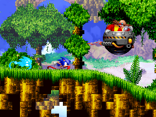

After the destruction of the Death Egg in space, Sonic falls back into the atmosphere, only to be ambushed by Mecha Sonic and the Egg Robos. The plummet sends the Tornado into freefall, forcing Sonic and Tails to land on the edge of the rising Angel Island. Knuckles, meanwhile, awaited the return of the Master Emerald- only to be met with a violent rumbling. Sensing imminent danger, he emerges from the underground temples to investigate.
Using the remaining power of the downed Death Egg, Eggman launches a desperate attack that shatters the island. The landmass is sent into freefall, with debris plunging toward the ocean below. Before long, even the Death Egg itself descends from space, drawing closer to the island's core.
As the trio corner Dr. Eggman at the crash site of his Giant Eggman Robo, he sets his plan B in motion, summoning a vortex with the help of a mysterious purple shard. However, the scheme goes awry, and he is hurled into a distant dimension. Leaderless, the Egg Robos turn on one another in a scramble for control. Seizing the moment, Sonic, Tails, and a reluctant Knuckles escape the collapsing island as the Death Egg hurtles toward impact.
